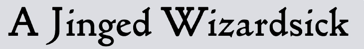
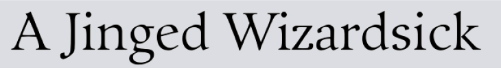
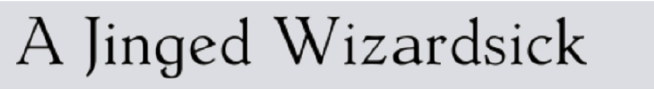
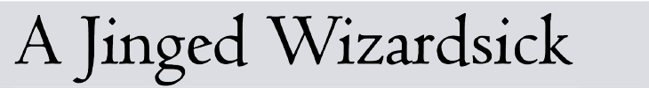
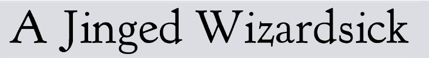
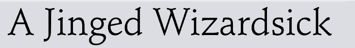

ENG: Humanistic; FR: Humanes; GE: Venezianische Antiqua
Старейший итальянский печатный тип шрифта, основанный на почерках гуманистов. Один из первых вырезанных шрифтов в этой категории был создан в конце 15 века Николасом Дженсоном, во время итальянского возрождения. Этот почерк основывается на каролингских минускулах 9го века. Это основной пример для первой группы, которую мы до сих пор широко используем: венецианскую антикву.
Характеристики:
Ось контраста толщин наклонена влево. Одна из наиболее характерных черт — наклонный горизонтальный штрих в букве “е”. Обычно верхние выносные элементы у строчных выше прописных букв. Верхние засечки крышеобразные, вогнутые. Засечки часто заканчиваются строго, угловато и немного скруглены. Не очень сильный контраст толщин, меньше, чем у ренессансной антиквы. Общий рисунок гуманистических антикв примечательно легкий. Жирные и наклонные начертания были добавлены после и часто не соответствуют характеру этих шрифтов.
Centaur, Bruce Rogers 1914г (на основе письма Nicolas Jenson 1470г.)
Golden Type, William Morris, 1890
Guardi, Reinhard Haus, 1986
Hollandse Mediaeval, Sjoerd Hendrik de Roos, 1912
Jenson Classico, Nicolas Jenson 1470
Kennerley Old Style, Frederic W. Goudy, 1911
Guardi, Reinhard Haus, 1986
Schneidler, Friedrich Hermann Ernst Schneidler, 1936